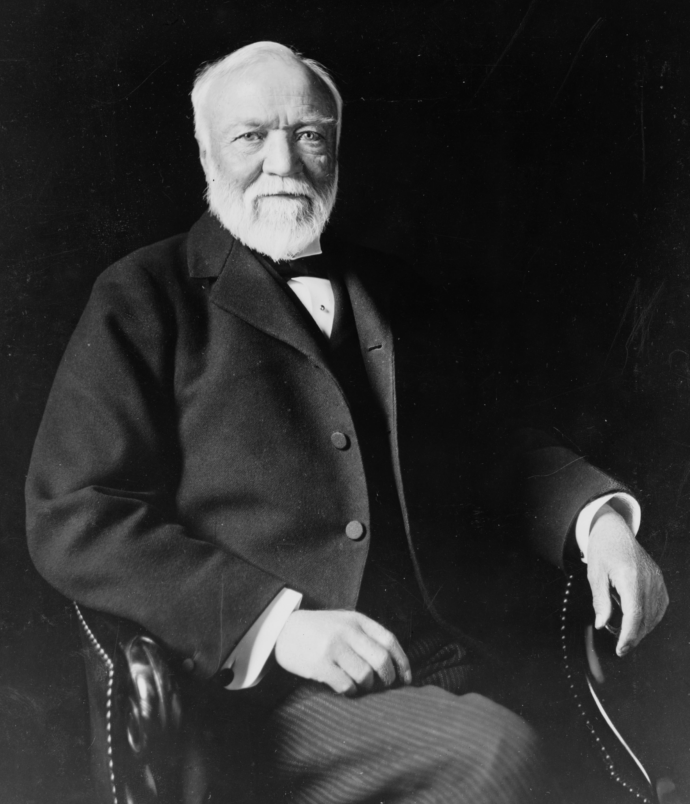

Ethics and Wealth
Home
Carnegie
Singer
Friedman
Analysis
Conclusion
Multiple perspectives on the voluntary distribution of wealth and the proper methodology and motivation of said distribution coupled with detailed analysis.

"Andrew Carnegie, American Businessman and Philanthropist"
Theodore C. Marceau (American 1859-1922)
Library of Congress. Public Domain